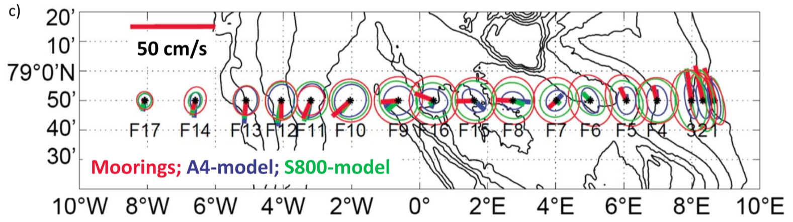
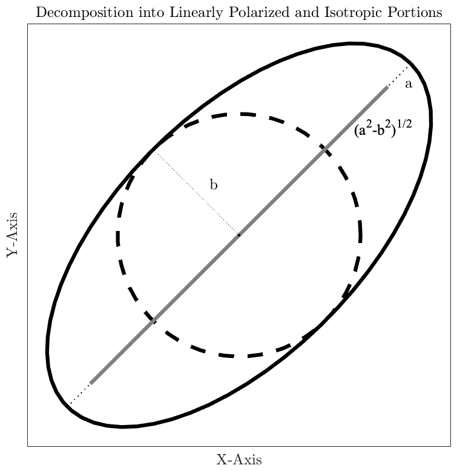

name: thevarianceellipse class: center,middle, .toc[[✧](../index.html)] .title[The Variance Ellipse] --- class: left, .toc[[✧](../index.html)] #The Variance Ellipse For bivariate data, like velocity, the variabililty can be spread out in not one but two dimensions. In this case, the variance is now a *matrix*, and the spread of the data is characterized by an *ellipse*. <center><img style="width:37%" src="../figures/ellipseschematic.png"></center> This *variance ellipse* eccentricity indicates the extent to which the variability is *anisotropic* or *directional*, and the orientation tells the direction in which the variability is concentrated. --- class: left, .toc[[✧](../index.html)] #Variance Ellipse Example Variance ellipses are a very useful way to analyze velocity data. This example compares velocities observed by a mooring array in Fram Strait with velocities in two numerical models.  .cite[From Hattermann et al. (2016), “Eddy-driven recirculation of Atlantic Water in Fram Strait”, *Geophysical Research Letters*.] Variance ellipses can be powerfully combined with lowpassing and bandpassing to reveal the geometric structure of variability in different frequency bands. --- class: left, .toc[[✧](../index.html)] # Understanding Ellipses This section will focus on understanding the properties of the variance ellipse. To do this, it is not really possible to avoid matrix algebra. Therefore we will first review some relevant mathematical background. --- class: left, .toc[[✧](../index.html)] # Review: Rotations The most important action on a vector `$\mathbf{z}\equiv [ u \,\,\, v]^T$` is a ninety-degree rotation. This is carried out through the matrix multiplication `\[\begin{bmatrix}0 & -1 \\ 1 & 0 \end{bmatrix}\,\mathbf{z}=\begin{bmatrix}0 & -1 \\ 1 & 0 \end{bmatrix}\begin{bmatrix} u \\ v \end{bmatrix}=\begin{bmatrix} -v \\ u \end{bmatrix}.\]` Note the mathematically *positive* direction is *counterclockwise*. A *general* rotation is carried out by the rotation matrix `\[\mathbf{J}(\theta) \equiv \begin{bmatrix}\cos\theta & -\sin\theta \\ \sin\theta & \cos \theta \end{bmatrix}\]` `\[\mathbf{J}(\theta)\, \mathbf{z}=\begin{bmatrix}\cos\theta & -\sin\theta \\ \sin\theta & \cos \theta \end{bmatrix}\begin{bmatrix} u \\ v \end{bmatrix}=\begin{bmatrix} u\cos\theta-v\sin\theta \\ u\sin\theta + v\cos\theta \end{bmatrix}.\]` The ninety-degree rotation matrix is `$\mathbf{J}(\pi/2)$`, while `$\mathbf{J}(\pi)$`, the 180 degree rotation matrix, just changes the sign of `$\mathbf{z}$`. --- class: left, .toc[[✧](../index.html)] # Review: Matrix Basics Recall that a matrix `$\mathbf{M}$` is said to be *unitary* if `\[\mathbf{M}^T\mathbf{M} = \mathbf{I} = \begin{bmatrix}1 & 0 \\ 0 & 1\end{bmatrix} \]` where “`$T$`” represents the *matrix transpose*, and `$\mathbf{I}$` is called the *identity matrix*. For a unitary matrix, `$\mathbf{M}^T\mathbf{M}\,\mathbf{z}=\mathbf{z}$`, i.e. when the matrix and its transpose operate in succession, nothing happens. We can see that the rotation matrix `$\mathbf{J}(\theta)$` is unitary since `\[\mathbf{J}^T(\theta)\,\mathbf{J}(\theta) = \begin{bmatrix}\cos\theta & \sin\theta \\ -\sin\theta & \cos \theta \end{bmatrix} \begin{bmatrix}\cos\theta & -\sin\theta \\ \sin\theta & \cos \theta \end{bmatrix}=\begin{bmatrix}1 & 0 \\ 0 & 1\end{bmatrix}. \]` We also note that `$\mathbf{J}^T(\theta)=\mathbf{J}(-\theta)$`, the transpose of a rotation matrix is the same as a rotation in the opposite direction. Makes sense! --- class: left, .toc[[✧](../index.html)] # Complex Notation A pair of time series can also be grouped into a single *complex-valued* time series `\[ z_n=u_n+iv_n\quad\quad n=0,1,2,\ldots N-1\]` where `$i=\sqrt{-1}$`. The *real part* represents east-west, and the *imaginary part* represents north-south. We will use both the complex-valued and vector representations. Complex notation turns out to be highly useful not only for bivariate data, but also in the analysis of real-valued time series as well. Complex numbers are reviewed in detail in another lecture. --- class: left, .toc[[✧](../index.html)] #The Mean of Bivariate Data Next we look at the mean and variance for the case of bivariate data, which we represent as the vector-valued time series `$\mathbf{z}_n$`. The sample mean of the vector time series `$\mathbf{z}_n$` is also a vector, `\[\overline{\mathbf{z}} \equiv \frac{1}{N}\sum_{n=0}^{N-1}\mathbf{z}_n=\begin{bmatrix} \overline{u} \\ \,\overline{v}\,\end{bmatrix}\]` that consists of the *sample means* of the `$u$` and `$v$` components of `$\mathbf{z}_n$`. --- class: left, .toc[[✧](../index.html)] #Variance of Bivariate Data The *variance* of the vector-valued times series `$\mathbf{z}_n$` is not a scalar or a vector, it is a `$2\times 2$` *matrix* `\[\mathbf{\Sigma}\equiv \frac{1}{N}\sum_{n=0}^{N-1}\left(\mathbf{z}_n-\overline{\mathbf{z}}\right)\left(\mathbf{z}_n-\overline{\mathbf{z}}\right)^T \]` where “`$T$`” represents the *matrix transpose*, `$\mathbf{z}^T =\begin{bmatrix} u & v \end{bmatrix}$`. Carrying out the matrix multiplication leads to `\[\mathbf{\Sigma}= \frac{1}{N}\sum_{n=0}^{N-1} \begin{bmatrix} \left(u_n-\overline{u}\right)^2 & \left(u_n-\overline{u}\right)\left(v_n-\overline{v}\right)\\ \left(u_n-\overline{u}\right)\left(v_n-\overline{v}\right) &\left(v_n-\overline{v}\right)^2 \end{bmatrix} \]` The diagonal elements of `$\mathbf{\Sigma}$` are the sample variances `$\sigma_u^2$` and `$\sigma_v^2$`, while the off-diagonal gives the *covariance* between `$u_n$` and `$v_n$`. Note that the two off-diagonal elements are identical. --- class: left, .toc[[✧](../index.html)] #Standard Deviation `$\mathbf{\Sigma}$` is generally called the *velocity covariance matrix.* We can still define a scalar-valued standard deviation, `$\sigma$`, by taking the mean of an *inner product* rather than an *outer product*, `\[\mathbf{\Sigma}\equiv \frac{1}{N}\sum_{n=0}^{N-1}\left(\mathbf{z}_n-\overline{\mathbf{z}}\right)\left(\mathbf{z}_n-\overline{\mathbf{z}}\right)^T,\quad\quad\sigma^2\equiv \frac{1}{N}\sum_{n=0}^{N-1}\left(\mathbf{z}_n-\overline{\mathbf{z}}\right)^T\left(\mathbf{z}_n-\overline{\mathbf{z}}\right). \]` The squared velocity standard deviation `$\sigma^2$` is related to the covariance matrix as the sum of the diagonal elements: `\[\sigma^2 = \Sigma_{uu}+\Sigma_{vv} = \sigma_u^2 +\sigma_v^2. \]` The sum of the diagonal elements of matrix is known as the *trace* of the matrix, denoted `$\mathrm{tr}$`. Thus `$\sigma^2=\mathrm{tr}\{\mathbf{\Sigma}\}$`. Note `$\sigma^2$` is only a factor of two away from the *eddy kinetic energy*, `$K=\frac{1}{2}\sigma^2$`. Clearly we only need to use one of these quantities. --- class: left, .toc[[✧](../index.html)] #Eigenvalue Decomposition For bivariate data `$\mathbf{z}_n$`, the second moment—the velocity covariance matrix—takes on a geometric aspect that can be highly informative. We will shown that the covariance matrix `$\mathbf{\Sigma}$` can be written as `\[\mathbf{\Sigma} = \begin{bmatrix}\cos\theta & -\sin\theta \\ \sin\theta & \cos \theta \end{bmatrix} \begin{bmatrix} a^2 & 0\\ 0& b^2 \end{bmatrix} \begin{bmatrix}\cos\theta & \sin\theta \\ -\sin\theta & \cos \theta \end{bmatrix} \]` or more compactly as `$\mathbf{\Sigma} = \mathbf{J}(\theta)\,\mathbf{D}(a,b) \,\mathbf{J}^T(\theta)$`, where we have introduced the diagonal matrix `$\mathbf{D}(a,b)$` defined as `\[ \mathbf{D}(a,b)\equiv\begin{bmatrix} a^2 & 0\\ 0& b^2 \end{bmatrix}. \]` This is the *eigenvalue decomposition* of the covariance matrix `$\mathbf{\Sigma}$`. Generally, the eigenvalue decomposition is found numerically, though for the `$2\times 2$` case this is not necessary because there are simple expressions for `$a$`, `$b$`, and `$\theta$`, as will be shown later. --- class: left, .toc[[✧](../index.html)] #Diagonalization The operation of the eigenvalue decomposition is to *diagonalize* the covariance matrix. The decomposition `$\mathbf{\Sigma} = \mathbf{J}(\theta)\,\mathbf{D}(a,b) \,\mathbf{J}^T(\theta)$` implies `\[\mathbf{J}^T(\theta)\mathbf{\Sigma} \mathbf{J}(\theta) = \mathbf{D}(a,b) \]` and this in turn means that if we rotate the observed velocities by `$-\theta$`, we obtain an ellipse with its major axis oriented along the x-axis, and with no correlation between the x- and y-velocities. These rotated velocities are given by `\[\widetilde{\mathbf{z}} \equiv \begin{bmatrix}\widetilde{u}\\\widetilde{v}\end{bmatrix} \equiv \mathbf{J}^T(\theta) \mathbf{z} =\mathbf{J}(-\theta)\mathbf{z} \]` with `$\widetilde{u}$` being the component of the velocity along the major axis, and `$\widetilde{v}$` the component of the velocity along the minor axis. --- class: left, .toc[[✧](../index.html)] #Diagonalization Forming the covariance matrix of the velocities rotated by the angle of `$\theta$` that comes out of the eigenvalue decomposition, we find `\begin{align}\widetilde{\mathbf{\Sigma}}&\equiv \left[\frac{1}{N}\sum_{n=0}^{N-1}\left(\widetilde{\mathbf{z}}_n-\overline{\widetilde{\mathbf{z}} }\right)\left(\widetilde{\mathbf{z}}_n-\overline{\widetilde{\mathbf{z}}}\right)^T \right]\\ &= \left[\frac{1}{N}\sum_{n=0}^{N-1}\left( \mathbf{J}^T(\theta)\mathbf{z}_n-\overline{ \mathbf{J}^T(\theta)\mathbf{z}}\right)\left( \mathbf{J}^T(\theta)\mathbf{z}_n-\overline{\mathbf{J}^T(\theta)\mathbf{z}}\right)^T \right]\mathbf{J}(\theta)\\ &= \mathbf{J}^T(\theta)\left[\frac{1}{N}\sum_{n=0}^{N-1}\left(\mathbf{z}_n-\overline{\mathbf{z}}\right)\left(\mathbf{z}_n-\overline{\mathbf{z}}\right)^T \right]\mathbf{J}(\theta) \\ &= \mathbf{J}^T(\theta)\left[\mathbf{J}(\theta)\,\mathbf{D}(a,b) \,\mathbf{J}^T(\theta) \right]\mathbf{J}(\theta) = \mathbf{D}(a,b)\end{align}` using `$\left(\mathbf{A}\mathbf{z}\right)^T=\mathbf{z}^T\mathbf{A}^T$`. Thus the eigenvalue matrix `$ \mathbf{D}(a,b)$` is simply the covariance matrix computed in a rotated frame. The eigenvalue decomposition has found the rotation for which the covariance between the rotated velocity components vanishes. --- class: left, .toc[[✧](../index.html)] #The Variance Ellipse The covariance matrix describes an ellipse with major axis $a$ and minor axis $b$, orientated at an angle $\theta$ with respect to the $x$-axis. The usual equation for an ellipse with major axis `$a$` oriented along the `$u$`-axis and minor axis `$b$` oriented along the `$v$`-axis is `\[\frac{u^2}{a^2} +\frac{v^2}{b^2} = \begin{bmatrix} u & v \end{bmatrix} \begin{bmatrix} 1/a^2 & 0 \\ 0 & 1/b^2 \end{bmatrix}\begin{bmatrix} u \\ v \end{bmatrix} =\mathbf{z}^T \mathbf{D}^{-1}(a,b)\,\mathbf{z} = 1\]` where the superscript `“$-1$”` denotes the matrix inverse. Recall the inverse of a matrix `$\mathbf{M}$` is defined to give $\mathbf{M}^{-1}\mathbf{M}=\mathbf{I}$. Thus <!--where we have made use of the *matrix inverse* `$\mathbf{D}^{-1}(a,b)$` of `$\mathbf{D}(a,b)$`. --> `\[\mathbf{z}^T \mathbf{\Sigma^{-1}}\,\mathbf{z} = \mathbf{z}^T \left[ \mathbf{J}(\theta)\, \mathbf{D}(a,b)\,\mathbf{J}^T\!(\theta)\right]^{-1}\,\mathbf{z} \\ =\left[ \mathbf{J}^T\!(\theta) \,\mathbf{z} \right]^T\, \mathbf{D}^{-1}(a,b)\,\left[\mathbf{J}^T\!(\theta)\,\mathbf{z}\right]=1\]` is the equation for an ellipse with semi-major axis `$a$`, semi-minor axis `$b$`, and oriented `$\theta$` radians counterclockwise from the `$x$`-axis. --- class: left, .toc[[✧](../index.html)] #The Variance Ellipse Thus we have shown the covariance matrix `$\mathbf{\Sigma}$` of a bivariate time series `$\mathbf{z}_n$` defines an ellipse that captures how the data is spread out about its mean value, as claimed. <center><img style="width:50%" src="../figures/ellipseschematic.png"></center> --- class: left, .toc[[✧](../index.html)] #Expressions for the Axes Exact expression can be found for `$a$`, `$b$`, and `$\theta$`. Here we introduce some new notation. `$\mathrm{tr} \{\mathbf{M}\}$` denotes the *matrix trace*, which is defined to be the sum of all diagonal elements of `$\mathbf{M}$`. Similarly `$\mathrm{det} \{\mathbf{M}\}$` denotes the determinant. For `$\mathbf{\Sigma}$` we have `$\mathrm{tr} \{\mathbf{\Sigma}\}=\sigma_{uu}^2+\sigma_{vv}^2$` and `$\mathrm{det}\{\mathbf{\Sigma}\}=\Sigma_{uu}\Sigma_{vv}-\Sigma_{uv}^2$`. The eigenvalues of `$\mathbf{\Sigma}$` are given explicitly by `\begin{align} a^2 & = \frac{1}{2} \mathrm{tr}\{\mathbf{\Sigma}\}+ \frac{1}{2}\sqrt{\left[\mathrm{tr}\{ \mathbf{\Sigma}\} \right]^2 -4\mathrm{det}\{\mathbf{\Sigma}\}}\\ b^2 & = \frac{1}{2} \mathrm{tr}\{\mathbf{\Sigma}\}- \frac{1}{2}\sqrt{\left[\mathrm{tr}\{\mathbf{\Sigma}\} \right]^2 -4\mathrm{det}\{\mathbf{\Sigma}\}} \end{align}` as can easily be shown by inserting the values for `$\mathrm{tr} \{\mathbf{\Sigma}\}$` and `$\mathrm{det} \{\mathbf{\Sigma}\}$`. .cite[Born and Wolf (1959), *Principles of Optics*] .cite[Samson (1980), “Comments on polarization and coherence”] --- class: left, .toc[[✧](../index.html)] #Expression for the Angle To find the angle `$\theta$`, we carry out the matrix multiplications, giving `\[ \mathbf{J}\left(\theta\right) \mathbf{D}(a,b)\mathbf{J}^T\!\left(\theta\right) = \frac{1}{2} \left(a^2+b^2\right) \mathbf{I} +\frac{1}{2} \left(a^2-b^2\right) \begin{bmatrix}\cos 2\theta&\sin 2\theta\\ \sin 2\theta & -\cos 2\theta \end{bmatrix}\]` and we also rewrite the covariance matrix `$\mathbf{\Sigma}$` in the form `\[\mathbf{\Sigma}= \begin{bmatrix}\Sigma_{uu} & \Sigma_{uv}\\\Sigma_{uv}&\Sigma_{vv} \end{bmatrix} = \frac{1}{2} \left(\Sigma_{uu}+\Sigma_{vv}\right)\mathbf{I} + \frac{1}{2}\begin{bmatrix}\Sigma_{uu}-\Sigma_{vv} & 2\Sigma_{uv}\\2\Sigma_{uv}&\Sigma_{vv}-\Sigma_{uu} \end{bmatrix}.\]` Equating terms in the anisotropic parts of these matrices leads to `\[\Sigma_{uu}-\Sigma_{vv}= \left(a^2-b^2\right) \cos 2\theta,\quad\quad\quad 2\Sigma_{uv}= \left(a^2- b^2\right) \sin 2\theta\]` and dividing these two expressions, we find `$\theta$` satisfies `\[\tan(2\theta) = \frac{2\Sigma_{uv} }{\Sigma_{uu}-\Sigma_{vv}}.\]` --- class: left, .toc[[✧](../index.html)] #Isotropy and Polarization The variance ellipse can alternately be decomposed into (i) *directional* variability in direction `$\theta$`, with variance `$a^2-b^2,$` plus (ii) purely *isotropic* or *directionless* variability, with variance `$2b^2$.` <center></center> --- class: left, .toc[[✧](../index.html)] #The Polarization Ratio To show this, let `$\widehat{\mathbf{n}}=[\cos\theta \,\,\sin\theta]^T$` be the unit vector pointing in the direction of the major axis. Then `$\mathbf{\Sigma}$` may be written as `\[\mathbf{\Sigma} =\overset{\mathrm{polarized}}{\overbrace{\left(a^2-b^2\right) \widehat{\mathbf{n}}\,\widehat{\mathbf{n}}^T}} + \overset{\mathrm{unpolarized}}{\overbrace{b^2\mathbf{I}}}\]` as may be readily verified using trigonometric identities. The first component gives variability associated with the *particular* direction `$\widehat{\mathbf{n}}$`, while the second is associated with *all* directions. The first term is said to be “polarized” or *anisotropic*, while the second is said to be “unpolarized” or *isotropic*. <!--The variance is the sum of the diagonal elements, or matrix trace. --> Because `$\mathrm{tr}\{\widehat{\mathbf{n}}\,\widehat{\mathbf{n}}^T\}=1$`, the variance associated with the first term is `$a^2-b^2$`. Because `$\mathrm{tr}\{\mathbf{I}\}=2$`, that associated with the second is `$2b^2$`. The *polarization ratio* `$P\equiv\left(a^2-b^2\right)/\left(a^2+b^2\right)$` tells the extent to which the variability is organized along a particular direction. --- class: left, .toc[[✧](../index.html)] #Three Dimensions What is if the vector `$\mathbf{z}_n$` has three components, `$\mathbf{z}_n=[ u\,\,\, v\,\,\, w]^T$`? This is no different. The general form for an eigenvalue decomposition of a real-valued `$N\times N$` matrix is `\[\mathbf{\Sigma} = \mathbf{U} \mathbf{D} \mathbf{U}^T\]` where `$\mathbf{U}$` is an orthogonal matrix (essentially, a generalized rotation), with `$\mathbf{U}^T\mathbf{U}=\mathbf{U}\mathbf{U}^T=\mathbf{I}$`, and `$\mathbf{D}$` is a diagonal matrix of eigenvalues. For any symmetric matrix, the eigenvalues are real-valued. For a covariance matrix such as `$\mathbf{\Sigma}$` in particular, the eigenvalues are also non-negative. A matrix having such a property is said to be *positive semi-definite*. --- class: left, .toc[[✧](../index.html)] #Three Dimensions In three dimensions, it is realtively easy to show that this becomes `\[\mathbf{\Sigma} = \mathbf{J}(\alpha,\beta,\theta)\,\mathbf{D}(a,b,c) \,\mathbf{J}^T(\alpha,\beta,\theta)\]` where `$\mathbf{J}(\alpha,\beta,\theta)$` is a three-dimensional rotation matrix and `\[ \mathbf{D}(a,b)\equiv\begin{bmatrix} a^2 & 0 & 0\\ 0& b^2 & 0 \\ 0 & 0 & c^2\end{bmatrix}. \]` The interpretation is that the covariance matrix `$\mathbf{\Sigma}$` describes an *ellipsoid* in three dimensions, with major axis `$a$`, first semi-minor axis `$b$`, and second semi-minor axis `$c$`, oriented in space as described by the rotation matrix `$\mathbf{J}(\alpha,\beta,\theta)$`. --- class: left, .toc[[✧](../index.html)] #Covariance Invariances The covariance matrix `$\mathbf{\Sigma}$` has several important invariances. We will look at these in a general way, enabling us to connect the `$2\times 2$` case we have been working with to the case of any number of dimensions. <!--`\[\mathbf{\Sigma}\equiv \frac{1}{N}\sum_{n=0}^{N-1}\left(\mathbf{z}_n-\overline{\mathbf{z}}\right)\left(\mathbf{z}_n-\overline{\mathbf{z}}\right)^T \]`--> --- class: left, .toc[[✧](../index.html)] #Determinant Invariance The first invariance is the determinant of covariance matrix. We have seen that `$\mathrm{det}\left\{\mathbf{\Sigma}\right\}=a^2b^2=A^2/\pi^2$` where `$A$` is the ellipse area. Intuitively, we expect we should be able to rotate the coordinate system without changing the ellipse area. This invariance relates to a property of the matrix determinant. If `$\mathbf{A}$` and `$\mathbf{B}$` are any two square matrices of the same size, then `\[\mathrm{det}\left\{\mathbf{AB}\right\}=\mathrm{det}\left\{\mathbf{A}\right\}\mathrm{det}\left\{\mathbf{B}\right\}.\]` It follows that, for any angle `$\vartheta$`, the rotated covariace matrix `$\widetilde{\mathbf{\Sigma}}\equiv\mathbf{J}(\vartheta)\mathbf{\Sigma}\mathbf{J}^T(\vartheta)$` has the same determinant as the original matrix, `\[\mathrm{det}\left\{\widetilde{\mathbf{\Sigma}}\right\} = \mathrm{det}\left\{\mathbf{J}(\vartheta)\right\}\mathrm{det}\left\{\mathbf{\Sigma}\right\}\mathrm{det}\left\{\mathbf{J}^T(\vartheta) \right\}=\mathrm{det}\left\{\mathbf{\Sigma}\right\} \]` using the fact that we have previously verified `$\mathrm{det}\left\{\mathbf{J}(\vartheta)\right\}=1.$` --- class: left, .toc[[✧](../index.html)] #Trace Invariance The second invariance is the trace of covariance matrix. We saw that `$\mathrm{tr}\left\{\mathbf{\Sigma}\right\}=\sigma_{uu}^2+\sigma_{vv}^2=2K$` where `$K$` is the eddy kinetic energy. Intuitively, we should be able to rotate the coordinate system without changing the kinetic energy. This invariance relates to a property of the matrix trace. If `$\mathbf{U}$` is any invertible matrix, such that `$\mathbf{U}^{-1}$` exists with `$\mathbf{U}^{-1}\mathbf{U}=\mathbf{I}$`, then `\[\widetilde{\mathbf{\Sigma}}\equiv\mathbf{U}\mathbf{\Sigma}\mathbf{U}^{-1} \]` is a *similarity transformation* of `$\mathbf{\Sigma}$`. The trace has the property that `\[\mathrm{tr}\left\{\mathbf{\Sigma}\right\}=\mathrm{tr}\left\{\mathbf{U}\mathbf{\Sigma}\mathbf{U}^{-1} \right\}=\mathrm{tr}\left\{\widetilde{\mathbf{\Sigma}}\right\}\]` which is called *similarity invariance*. Since the `$2\times 2$` rotation matrix `$\mathbf{J}(\vartheta)$` is invertible, the trace is not changed under rotations. Note, it is *not* the case that `$\mathrm{tr}\left\{\mathbf{AB}\right\}=\mathrm{tr}\left\{\mathbf{A}\right\}\mathrm{tr}\left\{\mathbf{B}\right\}$`! --- class: left, .toc[[✧](../index.html)] #Generalization to `$N>2$` Let's say that instead of two signal components, `$u$` and `$v$`, we have many, `$\mathbf{z}\equiv [z_1\,\,\,z_2\,\,\,\ldots \,\,\, z_N]^T$`. A common application is where the `$z_n$` are taken from a spatial grid, which we re-organize into a single column vector for convenience. We then form the covariance matrix and take its eigenvalue decomposition as before `\[\mathbf{\Sigma}\equiv \frac{1}{N}\sum_{n=0}^{N-1}\left(\mathbf{z}_n-\overline{\mathbf{z}}\right)\left(\mathbf{z}_n-\overline{\mathbf{z}}\right)^T =\mathbf{U}\,\mathbf{D}\,\mathbf{U}^T \]` but where now `$\mathbf{U}$` is an orthogonal matrix (a "generalized rotation"), with `$\mathbf{U}^T\mathbf{U}=\mathbf{U}\mathbf{U}^T=\mathbf{I}$`, and `$\mathbf{D}$` is a diagonal matrix of eigenvalues. In this `$N$`-dimensional case, `$\mathrm{tr}\left\{\mathbf{\Sigma}\right\}/N$` is the *average variance* across the `$N$` components, while `$\sqrt{\mathrm{det}\left\{\mathbf{\Sigma}\right\}}$` is a measure of the *volume* enclosed by the variability. --- class: left, .toc[[✧](../index.html)] #Generalization to `$N>2$` Transforming the original variables as `\[\widetilde{\mathbf{z}} \equiv \begin{bmatrix}\widetilde{z}_1 & \widetilde{z}_2 & \ldots & \widetilde{z}_N\end{bmatrix} \equiv \mathbf{U}^T\mathbf{z} \]` we obtain `$ \widetilde{z}_1$` as the orthogonal transformation (linear combination preserving the vector length `$\|\mathbf{z}\|$`) of the original time series having the maximum variance. Another way to say this is that `$ \widetilde{z}_1$` is the time series along the "generalized direction" that maximizes variance, `$ \widetilde{z}_2$` is the time series along the generalized direction that maximizes variances and that is also orthogonal to the direction of `$\widetilde{z}_1$`, etc. These are the *principal components*. The columns of `$\mathbf{U}$` correspond to spatial patterns if we rearrange them back onto the grid. The magnitudes of these components are the elements of the diagnonal matrix `$\mathbf{D}$`, `$d_1$`, `$d_2$`, ... `$d_N$`. That's EOF analysis in a nutshell. The variance ellipse is geometric expression of a `$2\times 2$` EOF analysis. --- class: left, .toc[[✧](../index.html)] #Homework 1. Review the notes. 1. Using your own bivariate (or complex-valued) data, or data from the variance ellipse lab, verify numerically that of all possible rotations, the rotation maximizing the variance in the first component of the bivariate time series (or in real part of the complex-valued time series) is the rotation by `$-\theta$`, with $\theta$ given at the bottom of page 17. 1. Multiply out the expansion `$\mathbf{J}(\theta)\,\mathbf{D}(a,b) \,\mathbf{J}^T(\theta)$` to verify that `\begin{multline} \mathbf{J}(\theta)\,\mathbf{D}(a,b) \,\mathbf{J}^T(\theta) =\\ \frac{1}{2} \begin{bmatrix} \left(a^2+b^2\right)+ \left(a^2-b^2\right)\cos 2\theta& \left(a^2-b^2\right)\sin 2\theta\\ \left(a^2-b^2\right)\sin 2\theta & \left(a^2+b^2\right)- \left(a^2-b^2\right)\cos 2\theta \end{bmatrix}\end{multline}` 1. Use this to verify that if we insert the expressions for `$a^2$` and `$b^2$` on page 16, together with the expression for `$\theta$` on page 17, into `$\mathbf{J}(\theta)\,\mathbf{D}(a,b) \,\mathbf{J}^T(\theta)$`, we do indeed recover the covariance matrix `$\mathbf{\Sigma}$`. <!--1. From these, verify the formula for `$a^2$` and `$b^2$` on page 16. This shows how the ellipse axes are found from the components of `$\mathbf{\Sigma}$`.--> <!--1. Algebraically verify that using the given values for `$a$`, `$b$`, and `$\theta$` does indeed cause the two sides of `$\mathbf{\Sigma}=\mathbf{J}(\theta)\,\mathbf{D}(a,b) \,\mathbf{J}^T(\theta)$` to be equal to each other.--> 1. Verify the polarization expansion of `$\mathbf{\Sigma}$` at the top of page 19. <!--and also the expansion at the top of the page “Expression for the Angle”.--> <!--1. If you do not have a bivariate dataset, choose one from the examples provided.--> <!--1. Compute the vector mean and the covariance matrix.--> <!--1. Diagonalize the covariance matrix, either yourself or using <tt>specdiag</tt>.--> <!--1. Plot the 2D histogram of the data using <tt>twodhist</tt>, and compare with a plot of the variance ellipse. You can plot this yourself or using <tt>ellipseplot</tt>.--> <!--1. Rotate the time series backward by the angle `$\theta$`, and plot both the original time series and the rotated time series. Does the rotated version appear more meaningful?--> --- class: left, .toc[[✧](../index.html)] #Pop Quiz! 1. If `$\mathbf{J}(\theta)$` is the 2x2 rotation matrix, what is `\[ \mathbf{J}(\theta)\, \mathbf{J}(\theta)\, \mathbf{J}^T(\theta) \,\mathbf{J}(\theta)\, \mathbf{J}^T(\theta) \,\mathbf{J}(-\theta)\, \mathbf{J}(-\theta)\, \mathbf{J}^T(-\theta) =? \]` 2. What is the trace and determinant of `$\mathbf{J}(\theta)$`? Of the 2x2 matrix `$\mathbf{I}$`? 3. What is the rotation matrix about the z-axis in three dimensions? 4. An instrument observes a velocity distribution with a mean velocity of `$[u\,\,\,v]=[1 \,\,\, 0]^T$` and a variance ellipse with `$a=1/2$`, `$b=1/2$`, and `$\theta=0$`. Draw (possible) contours of its velocity distribution on the `$(u,v)$` plane. 4. An instrument observes a velocity distribution with a mean velocity of `$[u\,\,\,v]=[1 \,\,\, -1]^T$` and a variance ellipse with `$a=\sqrt{2}$`, `$b=\sqrt{2}/2$`, and `$\theta=45$` degrees. Draw (possible) contours of its velocity distribution on the `$(u,v)$` plane. 6. An instrument observes currents that are purely eastward and with a variance ellipse is isotropic. Draw a possible mean temperature distribution on the `$(u,v)$` plane that could accomplish a northward heat flux.